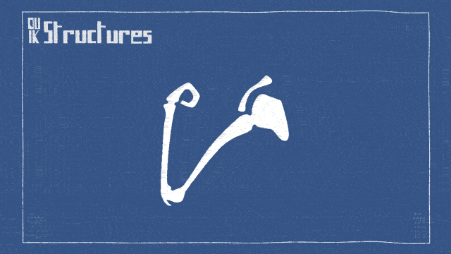
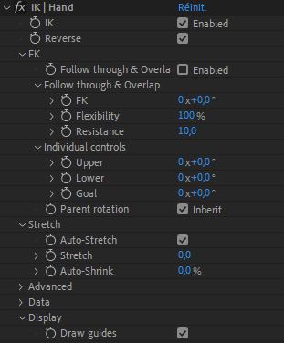
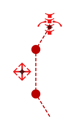
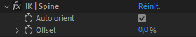
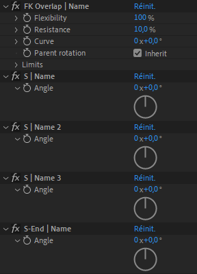

Auto-rig
Auto-rig
The Auto-rig is now smarter than ever. It actually replaces most of the older IK and Bézier IK buttons. It’s only one button for all the stuff! You just have to select some Structures, and let the Auto-rig do the job, in a single click. Most of the time, it will work out of the box without any need to configure anything, but of course, if you have some tricky special cases, you’re still able to adjust the inner machinery.
The Auto-rig in Duik Bassel is a versatile and smart tool which adapts to a lot of different situations. This makes it the cornerstone of the rigging process in Duik, which can be summarized to:
- Create Structures
- Auto-rig
- Extract Controllers
- Animate
As a smart tool, it will guess what you are trying to do, depending on the layers you have selected. It is able to add some “simple” IK or to rig a complete character in a single click.
Note
The Auto-rig is a tool in constant evolution. In each future version of Duik, it is going to work better and better, handling more different situations.

To get started quickly with this process, just watch this jumpstart by Jake In Motion:
Using the Auto-rig
- Select some layers in the composition.
-
Click the Auto-rig & IK button.
-
If there are Structures in the selection:
- If there are predefined limbs (arm, leg, spine or tail), the Auto-rig will rig everything for you, so you can start to animate right afterwards.
- If the Structures are custom Structures, the Auto-rig will add IKs to rig them, determining which type of IK would be the best according to the number and location of the layers.
-
If there are Controllers in the selection:
The auto-rig will use them when possible, depending on their location, instead of creating new ones. This is an easy way to use your own custom controllers (you just have to make sure they’re tagged.) -
If the selection is made of standard layers, the Auto-rig will add IKs to rig them, trying to guess how they need to be rigged using their parenting and the location of their anchor points. If the layers are not parented yet, the Auto-rig is able to parent them automatically, but it’s better in this case to select the layers in the right order: from the tip to the root of the limb (from hand to shoulder, or from foot to hip…).
-

IK and FK
The most important constraints used by the Auto-rig to rig characters are IK and FK.
Inverse Kinematics (IK)
IK is a way to animate limbs by moving a controller located at the tip of the limb (i.e. at the hand or at the foot).
This means that animating with IK uses positions, which are interpreted into the rotation of each part of the limb. This seems very natural when one manipulates it, but it is actually an advanced process. It is invaluable when the hand, or the foot, have interactions with anything else (like the foot interacting with the ground when the character walks).
IK are the only way to animate the position of the hips while keeping the feet stuck on the ground, or the hand against a wall.
But as animating with IK means animating positions, it is actually not the easiest nor the smartest way to animate limbs. It’s needed when there are interactions, but in any other case (most of the cases for arms), you should prefer animating with FK.

Animation by Jissse
In this animation, you can see how the “hand” is animated independently from the “shoulder”, which both animated using positions, without any rotation keyframe. This means that, for example, the hand can be fixed while the shoulder moves.
 Forward Kinematics (FK)
Forward Kinematics (FK)
FK is the most simple way to animate limbs: all parts are parented together, and you just have to animate the rotations of each parts. Rotation is way easier to animate than position: there’s only one value, one axis, and you don’t have to adjust trajectories, you can focus on speed and eases only. Ususally, when animating with FK, the animator wants to add follow-through and overlap. As these are very common in animation, FK controls created with Duik include an automatic follow-through and overlap tool.
IK / FK
As both IK and FK can be useful, all IK created with Duik also include FK controls, and the animator can switch between FK and IK whenever he wants. The FK controls included in the IK effects even include an automatic follow-through and overlap.
To make this process the easiest possible, an IK/FK Switch tool is provided with the animation tools.
When the Auto-rig creates an IK / FK, it can be adjusted in the effects of the corresponding controller. The type of the IK can vary depending on the type and number of layers which were rigged.
One-Layer IK (shoulder rotation, single-layer spine…)

-
The Enable IK checkbox can be used to deactivate the IK and animate only using the FK control.
Tip
On this specific one-layer IK, you can animate in FK even without deactivating the IK. The layer controlled by the IK can even still be rotated manually too.
-
The Weight is used to adjust the influence of the IK. Lowering this value is very useful to rig shoulders for example. The shoulder will “look at” the hand (the controller of the IK) with the IK, but just a little. This way, the shoulder will rotate automatically in a very natural way when the hand moves.
- The FK angle controls the rotation of the rigged layer.
- In the advanced section, you can enable the inheritance of the parent rotation. In this case, the orientation of layer controlled by the IK will change when its parents rotate.
- The Full rotation limit changes the side where the value for the rotation will jump by 360°. This can be useful to fix jumping issues when the weight is not set to 100%.
- In the display section, you can customize the way the IK is shown by the controller, and how it displays some information. Deactivating all these options will improve the performance.
Two-layer IK (arms and legs…)

-
The Enable IK checkbox can be used to de-activate the IK and animate only using the FK controls.
-
In the FK section, there are some automatic Follow through and overlap controls. See the FK with follow-through, overlap and drag paragraph for more information about these controls.
-
In the FK section, you can animate in FK with the individual controls when the IK is disabled.
-
The inheritance of the rotation of the parent layer can be disabled in the FK section. This is especially useful when animating arms in FK, so that the rotation of the torso will not influence the animation of the arms, to keep them vertical regardless of the movement of the spine.
-
The Data sections exposes some results of the IK computation. It can be very useful for automating things, using these data in your own expressions or with the Connector. For example, you can read the length of the ik, of each part of the limb, the stretch ratio, etc.
-
In the display section, you can customize the way the IK is shown by the controller, and how it displays some information. Deactivating all these options will improve the performance.

Bezier IK (multi-layer spine, tails…)

The Bézier IK uses a virtual Bézier path to control the position and the rotation of the layers. It is not actual inverse kinematics but it is called IK because the way to animate it is very similar.
This virtual Bézier path is an arc between the two extremes, controlled by tangents in the middle.
Two controllers are needed to control Bezier IK. One at the end of the chain, like with other types of IK, and one in the middle which controls the curve. On both of these controllers there are some options in the effects.
Main Controller (end)

-
The Auto orientation of the layers along the path can be disabled so that the layers will keep their own orientations.
-
The offset value can be used to move the layers along the virtual Bézier path of the IK
Middle Controller (curve)

-
You can disable the guides to hide the doted line representing the IK in the viewport. This will improve a bit the performance of After Effects.
-
When the handles are shown, you can control precisely the two tangents of the virtual Bézier Path, to change the shape to an S for example (instead of controlling both of them together and have only C shapes). To move the handles, double click on them in the viewport.
FK with follow-through, overlap and drag (tails…)

This constraint autommatically controls the rotation of all the parts of the chain, depending on both the animation of the rotation of the controller and the motion of the parent of the chain. It rotates the children of the chain according the overlap and follow through animation principles. This means it mimics ropes, tails, hair, etc. with the ability to adjust their flexibility and the resistance of the air or water where they are.

Animation by Jissse
In this example, there is an animation only on the rotation of the FK controller, and the motion of the tails is generated by the automatic follow-trough, drag and overlap of the controller.
Controllers
As opposed to previous versions of Duik, the Auto-rig in Duik Bassel is able to create any needed controllers to rig the selected layers. You do not necessarily have to create them yourself first.
This being said, if you need or want to add and use a specific controller, you just have to include it in the layer selection before running the Auto-rig. It will automatically detect and use it. This is especially useful if, for example, you want to control two different IKs with the same controller.
Tip
Always have a look in the effects of the Controllers after having run the Auto-rig! Depending on what has been rigged, there may be a lot of options there.
Additionnal panel
The additionnal panel for the Auto-rig is divided in two parts: some options for the Auto-rig process itself, and some complementary tools.
Note
Available in Standard and Expert modes only.

Options
-
By default, the Auto-rig will “bake” the appearance of any Structure after it has rigged it. This is a way to improve performance in After Effects by removing all unneeded expressions, but it will prevent you from changing the appearance of the Structures after having run the Auto-rig. You can disable this option if you wish; baking the appearance of the Structures will still be possible through the Edit Structures panel.
-
For long limbs (more than two or three layers), the autorig has to choose between standard IK, Bézier IK or FK. The default is FK - it is easier to achieve a nice and natural motion using the FK with overlap of Duik - but you may need IK in some cases, especially if the limb interacts with something else. For example if the dog’s tail is caught in the door. Ouch.
Complementary tools
Note
Available in Standard and Expert modes only.
Hint
These tools mostly work the same way than the different IK buttons which were available with previous versions of Duik.
Read above for a description of the effects added on the controllers.
-
The IK button may be needed in very special occasions when the Auto-rig is not able to automatically create IK. There is an additionnal panel for the IK to let you choose how the IK for three layers have to be made:
- 1 and 2-layer IK (the default option) creates a combination of a one-layer and two-layer IK to rig the three layers with only one controller. This is the preferred way of rigging complex limbs like quadrupeds legs, as it allows a lot of control over each part of the limb.
- 3-layer IK creates a single IK for the three layers, which may seem easier to manipulate, but which is more limited in use.
-
Bezier IK creates a Bezier IK without using the Auto-rig. In normal situations, as soon as there are more than two layers, the Auto-Rig will create a Bézier IK, but in some cases you may need some Bézier IK for only one or two layers; in this case, you can use this tool instead.
-
FK Overlap rigs a chain of layers with a rotation controller (FK) with automatic follow-through and overlap. This is very useful for tails, hanging ropes, fabric…